At Greenfield Local Hub, we are proud to partner with a diverse group of local farmers who are passionate about sustainable agriculture and providing high-quality produce to our community. Our farmers come from various backgrounds and specialize in different types of farming, including organic vegetables, fruits, dairy products, and artisanal goods.
Our farmers are committed to using environmentally friendly practices that promote soil health, conserve water, and reduce the use of synthetic pesticides and fertilizers. They work tirelessly to cultivate fresh, nutritious food while also supporting biodiversity and protecting natural resources.
By choosing to shop with us, you are directly supporting these hardworking farmers and contributing to a more sustainable food system. We encourage you to learn more about our farmers and the incredible work they do to bring fresh, local food to your table.
Our farmers are the heart of Greenfield Local Hub. They are dedicated to providing the freshest and most delicious produce while also caring for the land and their communities. Each farmer has a unique story and farming philosophy that contributes to the rich tapestry of our local food system.
From small family farms to larger operations, our farmers share a common commitment to sustainability, quality, and community support. They use a variety of farming methods, including organic, regenerative, and biodynamic practices, to ensure that their products are not only good for you but also good for the planet.
We invite you to explore our farmers' profiles on our website to learn more about their backgrounds, farming practices, and the products they offer. By supporting our farmers, you are helping to create a more resilient and sustainable food system for everyone.
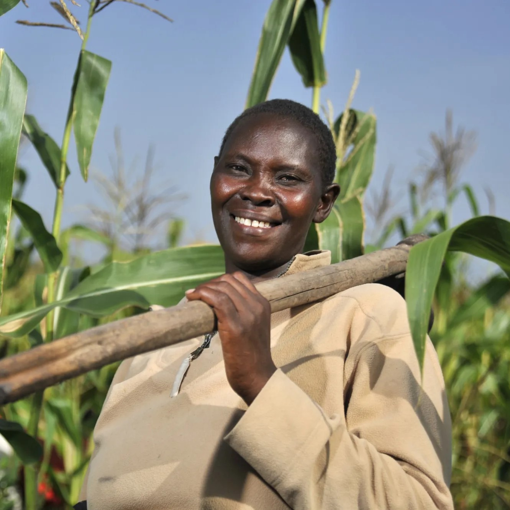
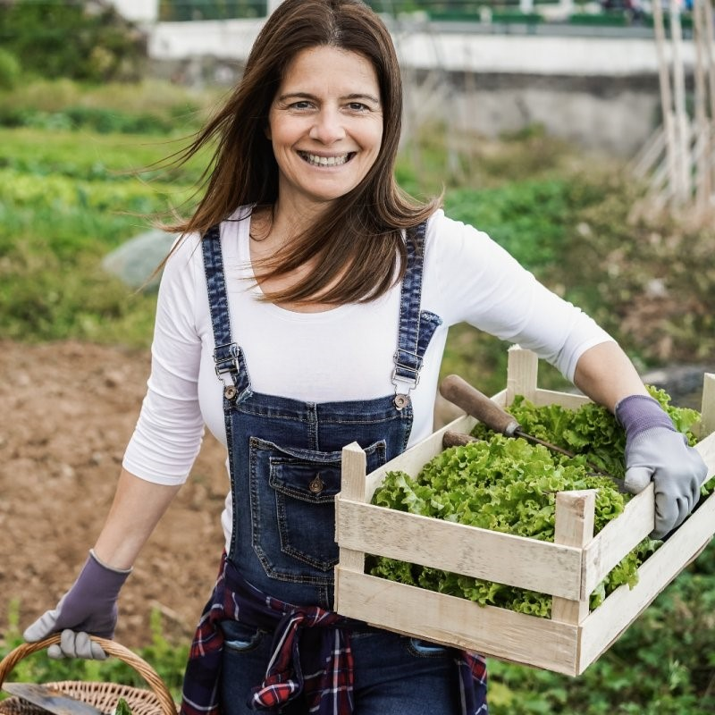
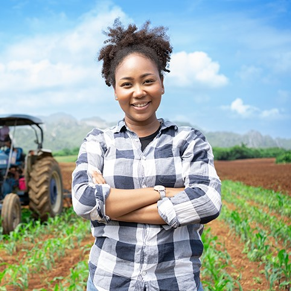
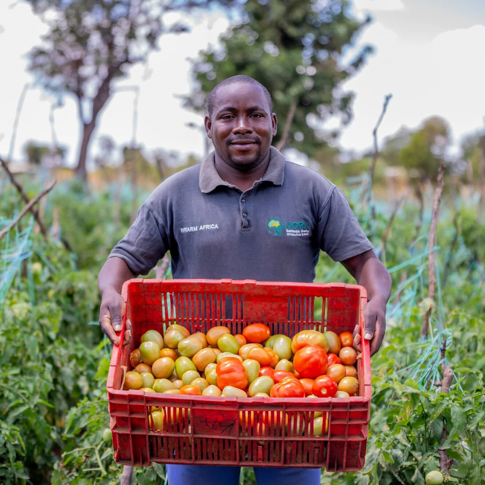
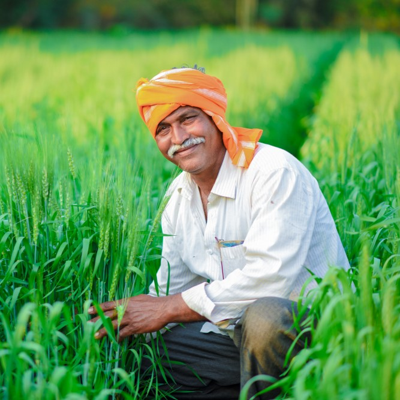
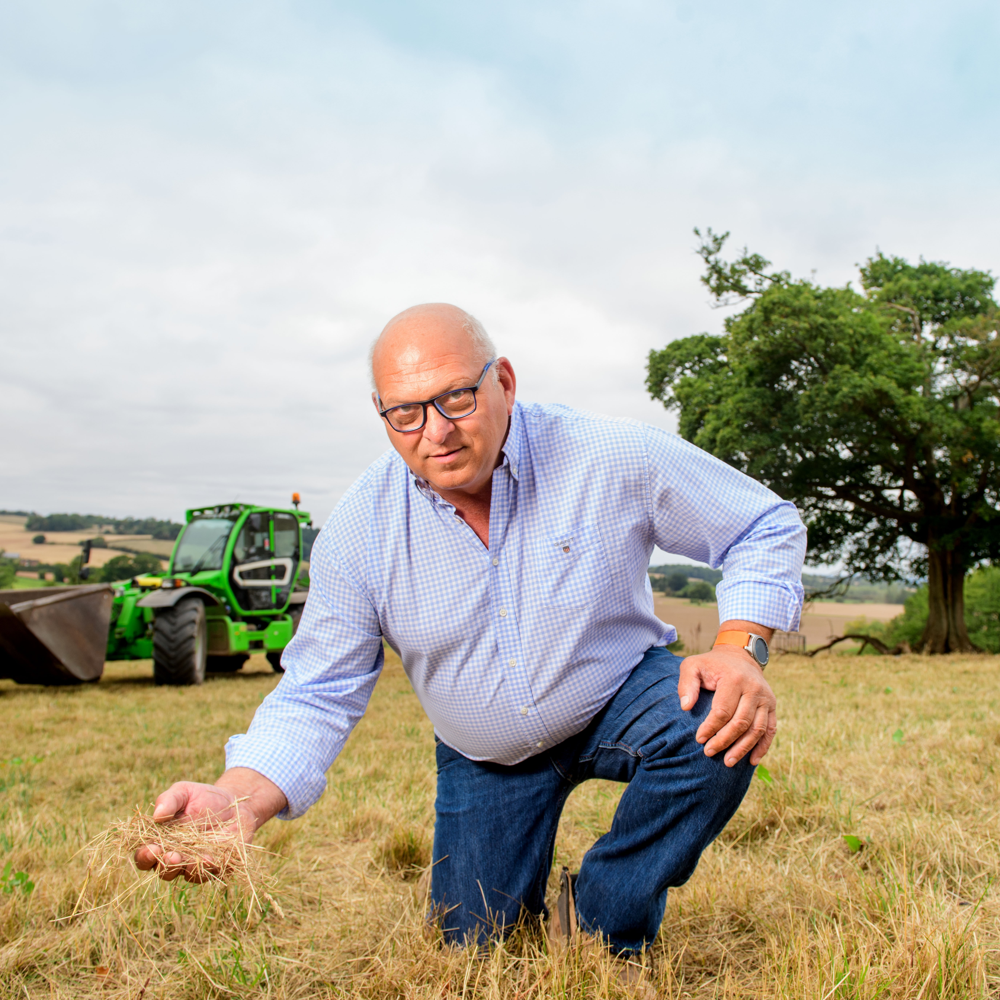
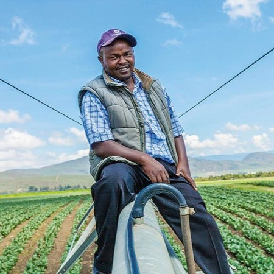
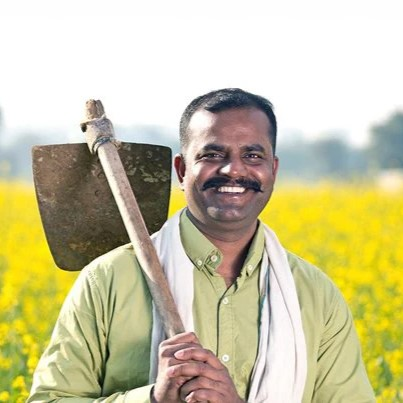
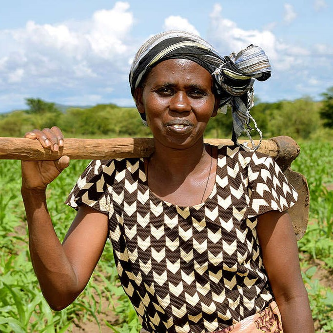
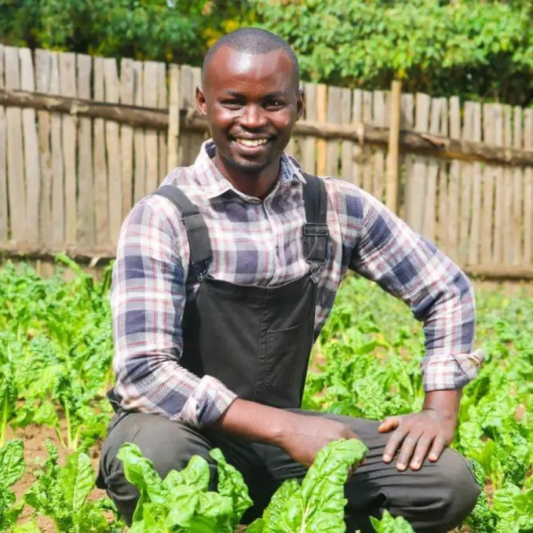
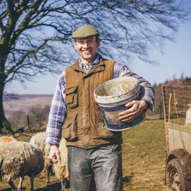
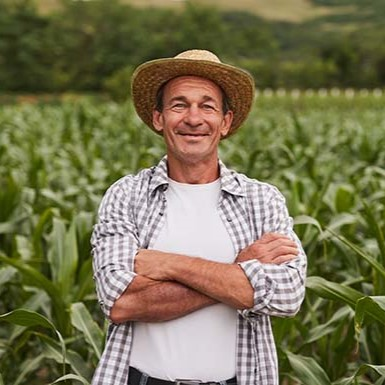
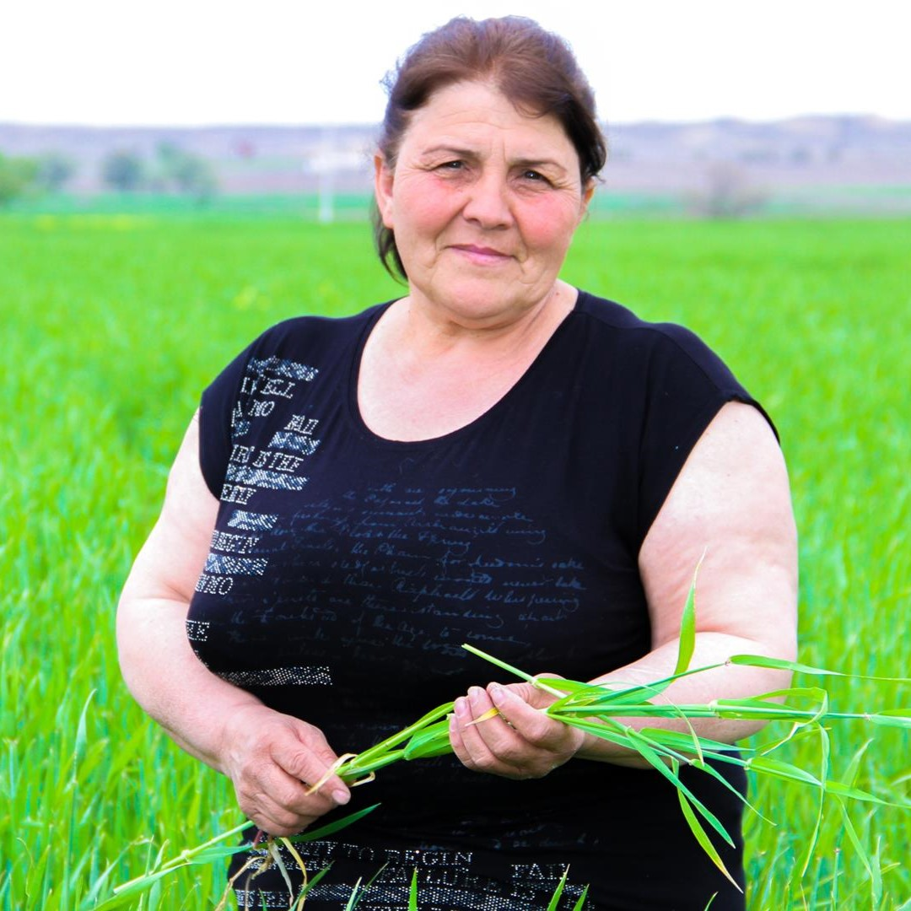
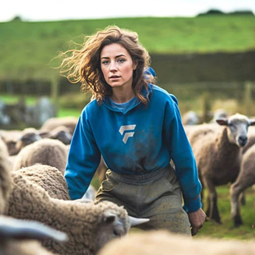
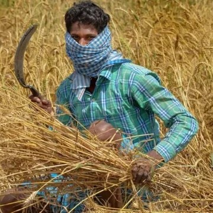
Learn more about the individuals behind the produce you love. Each of our farmers has a unique story and approach to sustainable agriculture.
There are many ways you can support our farmers and contribute to a more sustainable food system. Here are some of the ways you can get involved:
Your support makes a significant difference in the lives of our farmers and helps to create a more sustainable and equitable food system for everyone. Thank you for being a part of our community!